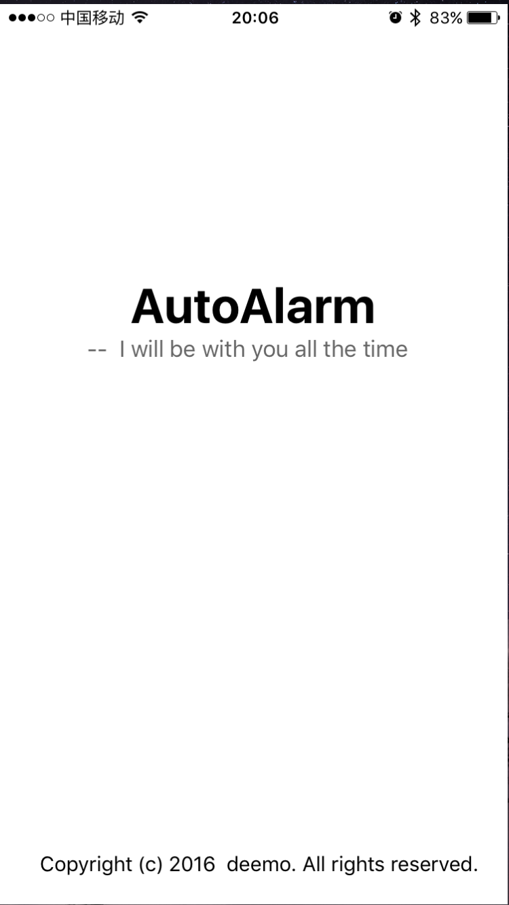

Contents
Music Action Game on Imbedded System (2015)
Design a music action game on CPU with limited performance(Cortex M3). The game needs to do the following things at a very short time: reading pattern file and music from SD cards, playing music, dealing with touch instances and changing the patterns on LCD.
Because of low CPU frequency (50MHz) and limited memory space (96k), both hardware and software optimiz ation skills are used to ensure the game run smoothly. Hardware optimization includes using Direct Memory Access to connstantly sending audio data to release CPU. Software optimization includes minimizing the pixel to draw each frame, generating all the note pattern while loading the song.
Also, the game has an excellent framework. Everyone can play their new song just by putting the audio file and pattern file into SD card.
Project Website: https://github.com/zyxiaooo/SJTU/tree/master/embedded_system
Football Tracing in Low Quality Video (2016)
Design an algorithm to trace the players and football in a video with poor quality. The algorithm combines several classic methods and also uses Weighted Matrix–a new innovating way to particularly trace football.
The Weighted Matrix calculates how likely a pixel can belongs to football and the matrix updated each frame. The weighted matrix can successfully distinguish football from similar objects such as shoes of football player and gloves of goalkeeper through a sequence of frames. It is also an automatic algorithm, which means we don't need to tell the program the initial position of football, for it can automatically find the football after several frames.
Project Website: https://github.com/zyxiaooo/SJTU/tree/master/football_tracing
AAAS: A Medical Software Development (2015)
Develop a software to automatically help doctor recognize and seperate visceral adipose tissues and subcutaneous adipose. The software uses deep learning algorithm designed by Dr. Fei Jiang to analyse original picture.
My resposibilies includes integrating the algorithm into the software, providing friendly user interface, allowing users to manually modify the results, enableing volume rendering function, and accelerating the algorithm using CUDA based GPU.
Project Website: https://github.com/zyxiaooo/SJTU/tree/master/AAAS
Auto Alarm: An Interesting IOS app (2016)
This tiny app, together with a small bluetooth device, can periodically send SOS email which includes users' location information to their selected contacts when something emergency happens (or in another words, when the user press the button on the bluetooth device several times). The app use some tricky methods so it can work totally in the background, the app can stay in background forever unless user kills it manually.
Project website: https://github.com/zyxiaooo/SJTU/tree/master/auto-alarm
Simplified C Language Compiler (2015)
Design and Implement a simplified complier for a given programming language called SMALLC, which is a simplified version of C language. The complier takes SMALLC source code as input, then proceed lexical analysis and syntax analysis with the help of lex and Yacc. The complier's output is LLVM middle term language.
Also I implemented some extra functions. First is error checking. With this the complier can detect some simple error when the program fail to compile and return the line number of error code. Second is expression evaluation. That is calculating the known expression directly during the compile time to decrease the number of output codes.
Project Website: https://github.com/zyxiaooo/SJTU/tree/master/compiler
Smart Phone Remote Vehicle Control app (2015)
Develop a control system on smart vehicle. The system use two cellphones, the first one, called Transmission Cellphone, is on the vehicle, responses for video and sends command to vehicle using bluetooth. The other one, called Display Cellphone, is on the user's hand, response for sending command from user to Transmission Cellphones and show the video from Transmission Cellphone.
Project Website: https://github.com/zyxiaooo/SJTU/tree/master/car-controller
Bulls and Cows game on BASYS2 board(2014)
Design a small but classic game on BASYS2 board. The game use nearly all resource available on the board, including four digital 7-segment display for displaying numbers and results, 8 LCD to show the remaining chances, 2 switches for control.
Project Website: https://github.com/zyxiaooo/SJTU/tree/master/small_game
Advanced MIPS CPU Simulator with Multi-Cycle/Pipeline (2014)
Develop a MIPS CPU simulator with multi-cycle and pipeline. Design the simulator of each components used in a MIPS CPU like instruction memory, data memory, ALU and ALU Control. Then connected all components into an advanced MIPS CPU simulator with multi-Cycle and pipeline. Finlaly we need to implement the multi-cycle CPU Simulator on a Xilinx Experiment Board in Verilog HDL.
Project Website: https://github.com/zyxiaooo/SJTU/tree/master/computer-arch